Study notes: Module III: semiconductors
7.1–7.3 Semiconductors, intrinsic and extrinsic (student notes)
Before you start
- Conductors, semiconductors and insulators differ by their resistivity (Plus Two recall below).
- Covalent bonds in silicon: each atom has four valence electrons and four neighbours.
- Energy bands: the valence band, the conduction band and the gap between them.
Recall. In a solid the electron energy levels form bands. The filled band at the top of the solid's occupied levels is the valence band, and the next empty band is the conduction band. The gap between them is the energy gap $E_g$.
Re-derive.
- A conductor has its top band only partly filled, so electrons can move under a field.
- An insulator has a filled valence band and a wide gap, so electrons cannot move.
- A semiconductor has the same picture as an insulator, but the gap is narrow (about 0.2 to 2.5 eV, book p. 199).
Saved. Book p. 199. Diamond (about 6 eV) is an insulator; Ge and Si are semiconductors at room temperature.
1. What a semiconductor is
A semiconductor conducts better than an insulator and worse than a metal. Its resistivity is between $10^{-5}$ and $10^{+4}$ ohm-m, against $10^{-8}$ to $10^{-6}$ ohm-m for conductors and $10^{7}$ to $10^{8}$ ohm-m for insulators (book p. 199). Germanium and silicon are elemental semiconductors from Group IV. GaAs, InP and CdS are compound semiconductors, made from Groups III and V, or II and VI.
Three things make semiconductors useful. Their band gap is small, so light of a given wavelength can be emitted or absorbed. This is the basis of LEDs and lasers. All semiconductors have a negative temperature coefficient of resistance: their resistance falls as the temperature rises. Their conductivity can be changed a great deal by adding impurities. The controlled addition of impurities is called doping.
2. Pure or intrinsic semiconductors
An intrinsic semiconductor is pure. Take silicon, with four valence electrons. Each atom forms four covalent bonds, so at 0 K all valence electrons are in bonds and the crystal is an insulator (Fig. 7.1a).
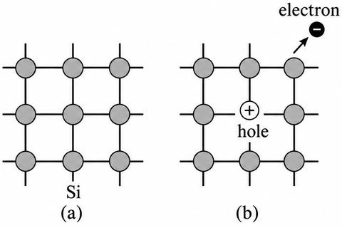
At higher temperatures some bonds break. A freed electron moves through the crystal, and the broken bond it leaves behind is a hole. The hole also carries current: a neighbouring electron can jump into it, and the hole then moves the other way. Electrons and holes move in opposite directions under a field and both carry current (Fig. 7.1b).
In the band picture (Fig. 7.2), at 0 K the valence band is full and the conduction band is empty. Thermal energy lifts electrons from the valence band to the conduction band, and each one leaves a hole behind. So the number of electrons $n_i$ equals the number of holes $p_i$. Either one is called the intrinsic carrier concentration.
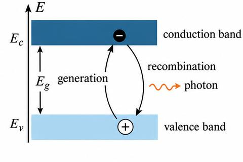
A hole is not just a missing electron. It has a larger effective mass and a lower mobility than an electron, and its charge is equal and opposite to an electron's.
Carriers also disappear. A free electron can meet a hole and recombine with it, and energy equal to the gap is released as radiation. In equilibrium the rate of generation $g$ equals the rate of recombination $R$. The recombination rate depends on the carrier densities, so $R = C\,n\,p$. For an intrinsic semiconductor $n_i = p_i$, and the balance gives
For a given temperature $n_i$ is fixed by the material. The constant $C$ is related to the densities of states at the band edges (this is used in §7.5).
3. Impurity or extrinsic semiconductors
Intrinsic conductivity is small and cannot be changed, so it is of little use on its own. Doping solves this. Group V atoms (P, As, Sb) give extra electrons, so they are donors. Group III atoms (B, Al, Ga, In) take electrons, so they are acceptors. Doping levels are about one impurity atom in $10^{6}$ to $10^{8}$ atoms. This does not change the crystal structure, but it changes the conductivity a great deal.
3.1 Donor or $n$-type semiconductor
A pentavalent atom such as phosphorus forms four covalent bonds with its neighbours. Its fifth electron is bound only weakly, and a small amount of thermal energy frees it (Fig. 7.3a).
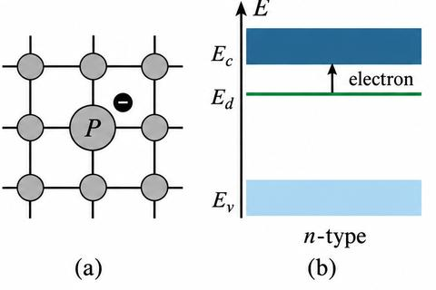
This electron sits at the donor level, just below the conduction band. The depth is about 0.01 eV in Ge and 0.03 eV in Si, so almost every donor gives its electron to the conduction band. The ionised donor is a fixed positive ion and does not move. The electrons are the majority carriers, and the thermally generated holes are the minority carriers. The electron concentration $n$ is much larger than $p$, but their product stays fixed (Eq. 7.2):
Equation (7.2) is the law of mass action. Section 7.5 derives it again.
3.2 Acceptor or $p$-type semiconductor
A trivalent atom such as boron has only three electrons for bonding. One bond is incomplete. The atom takes an electron from a neighbouring silicon atom to complete it (Fig. 7.4a). That leaves a hole behind, which is free to move.
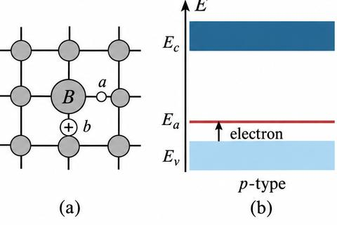
The acceptor level lies just above the valence band. It is about 0.01 eV above the valence band in Ge and 0.046 to 0.16 eV above it in Si. Electrons move up into it easily, and each acceptor produces one hole. Holes are now the majority carriers and electrons the minority carriers. Here $p$ is much larger than $n$, but the law of mass action still holds, $np=n_i p_i=n_i^2$. The crystal stays electrically neutral, because no charge is added or removed; the ionised acceptor is a fixed negative ion.
7.4 Drift velocity, mobility and conductivity of intrinsic semiconductors (student notes)
Before you start
- Current density and Ohm's law, $J=\sigma\mathcal{E}$ (Plus Two recall below).
- Carrier densities $n$ and $p$ in an intrinsic semiconductor (§7.2).
- The band gap $E_g$ and the Boltzmann factor $\exp(-E_g/2kT)$.
Recall. A current density $J$ is the current per unit area. For carriers of density $n$ and charge $e$ moving with drift speed $v_d$, $J=nev_d$.
Re-derive.
- In a field $\mathcal{E}$ an electron of mass $m$ accelerates for an average time $\tau$ between collisions, so its drift velocity is $v_d=e\mathcal{E}\tau/m$.
- Then $J=nev_d=(ne^2\tau/m)\mathcal{E}$, and comparing with $J=\sigma\mathcal{E}$ gives $\sigma=ne^2\tau/m$.
- Write $v_d=\mu\mathcal{E}$. Then $\mu=e\tau/m$, and $\sigma=ne\mu$. This is Eq. (7.6) of the book, with $\mu$ defined as the drift velocity per unit field.
Saved. Eqs. (7.3), (7.5) and (7.6).
1. Drift velocity and mobility
At any temperature above 0 K, thermal vibrations keep some electrons in the conduction band and an equal number of holes in the valence band. With no field, their motion is random and there is no net current. When a field is applied, each carrier gains velocity between collisions with nuclei and phonons, and it loses this extra velocity at each collision. The average extra velocity is the drift velocity $v_d$. It is proportional to the field:
The constant $\mu$ is the mobility: the drift velocity acquired per unit field. A carrier with high mobility responds strongly to a field. Electrons and holes have different mobilities, because electrons move in a nearly empty conduction band and holes in a nearly full valence band.
2. Current from electrons and from holes
Let $v_{dn}$, $\mu_n$ and $n$ be the drift velocity, mobility and concentration of the electrons. The current density from electrons is
Using $v_{dn}=\mu_n\mathcal{E}$ in (7.4) gives
Ohm's law reads $J_n=\sigma_n\mathcal{E}$, where $\sigma_n$ is the electronic conductivity. Comparing it with (7.5):
Holes give the same result with their own concentration and mobility:
The total conductivity is the sum of the two contributions:
For an intrinsic semiconductor $n=p=n_i$, so (7.8) becomes
This is the result used for item 14: the conductivity of an intrinsic semiconductor depends on the intrinsic carrier concentration and on both mobilities.
Two kinds of current can flow in a semiconductor. The drift current comes from the field. The diffusion current comes from a concentration gradient of carriers. The text above treats only drift. In a uniformly doped sample there is no gradient, so there is no diffusion current.
3. Variation of conductivity with temperature
Assume the mobilities do not depend on temperature. Then the temperature dependence of $\sigma$ comes from $n_i$. The book gives $n_i$ (derived in §7.5.4 as Eq. 7.36):
Here $m_n^*$ and $m_p^*$ are the effective masses of the electron and the hole, $E_g$ is the band gap, $k$ is Boltzmann's constant and $T$ is the absolute temperature. Substituting (7.10) into (7.9):
Taking logarithms gives a straight line in $1/T$:
The first term dominates, so a plot of $\ln\sigma$ against $1/T$ is nearly a straight line (Fig. 7.5). Its slope is $-E_g/2k$, so the band gap can be found from the slope.
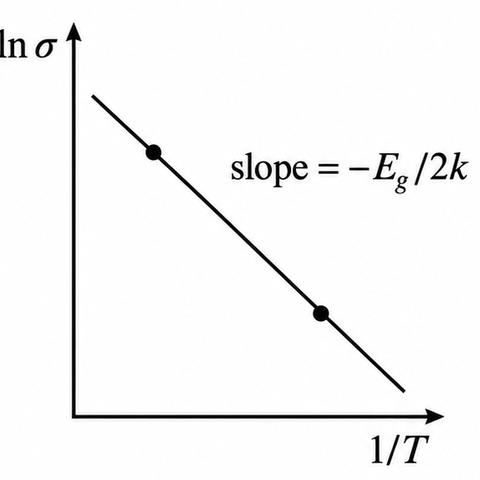
Worked use of this idea: Example 7.3 in §7.6 finds $E_g$ from two resistivity readings.
7.5 Carrier concentration and Fermi level for intrinsic semiconductors (student notes)
Before you start
- The Fermi–Dirac distribution $f(E)=1/[\exp((E-E_F)/kT)+1]$ (Eq. 7.14, derived here).
- Density of states for free electrons, $D(E)\propto E^{1/2}$.
- Exponentials and the integral $\int_0^\infty x^{1/2}e^{-x}\,dx=\sqrt{\pi}/2$.
Plus Two does not give the density of states or the Fermi level; this section is Beyond the Plus Two base, so there is no recall box here.
1. Electrons in the conduction band (§7.5.1)
The number of electrons per unit volume with energy between $E$ and $E+dE$ is the density of states times the probability that the state is filled:
Here $f(E)$ is the Fermi function, and $D(E)$ is the density of allowed states per unit volume. For free electrons the book takes $D(E)$ from §5 as
Combining them gives (7.16):
In a semiconductor the kinetic energy of an electron at $E$ in the conduction band is $E-E_c$, not $E$. So $E$ is replaced by $E-E_c$, and the mass is the electron effective mass $m_n^*$ (Fig. 7.6):
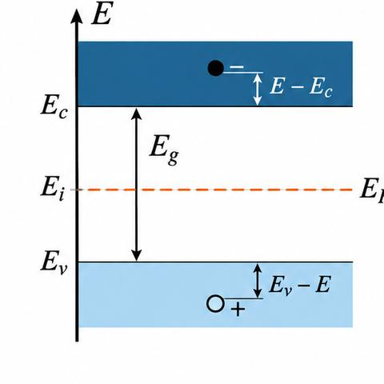
Integrate from $E_c$ to infinity to get the total electron concentration:
Near room temperature $kT\cong0.026$ eV. For $E>E_c$ the exponential is large, so the 1 in the denominator can be dropped:
Writing $x=(E-E_c)/kT$, so that $dE=kT\,dx$, and taking the lower limit $x=0$ at $E=E_c$, the integral becomes $\int_0^\infty x^{1/2}e^{-x}dx=(\pi/4)^{1/2}$. The result is
The probability of occupying $E_c$ is $f(E_c)\cong\exp[-(E_c-E_F)/kT]$. So (7.19) can be written as $n=2(2\pi m_n^*kT/h^2)^{3/2}f(E_c)$. The prefactor is the effective density of states at the conduction band edge, $N_c$:
For silicon the book gives $N_c=2.8\times10^{25}(T/300)^{3/2}\ \mathrm{m}^{-3}$ (unnumbered in the book).
2. Holes in the valence band (§7.5.2)
Holes are the empty states. The probability that a state at $E$ is empty is $1-f(E)$. So the hole density is
Expanding $1-f(E)$ gives a fraction whose denominator is $1+\exp[(E-E_F)/kT]$. In the valence band $E\lt E_F$, so the exponential in the denominator is small and can be dropped:
A hole at $E$ has kinetic energy $E_v-E$, so the density of states uses $E_v-E$ and the hole effective mass $m_p^*$:
Put (7.23) and (7.24) into (7.22) and integrate from $-\infty$ to $E_v$. Write $x=(E_v-E)/kT$. The integral gives the hole concentration:
$N_v$ is the effective density of states at the valence band edge. For silicon the book gives $N_v=2.8\times10^{25}(T/300)^{3/2}\ \mathrm{m}^{-3}$ (unnumbered). Equations (7.20) and (7.26) hold for both intrinsic and extrinsic material. For an intrinsic semiconductor, with $E_F$ replaced by the intrinsic level $E_i$:
3. The Fermi level (§7.5.3)
For an intrinsic semiconductor $n=p=n_i$. Equating (7.20) and (7.26) with this condition:
Taking logarithms and solving for $E_F$:
Substituting (7.21) and (7.27):
At 0 K the logarithm term vanishes:
So the Fermi level lies in the middle of the gap at 0 K. It is also in the middle at all temperatures if $m_p^*=m_n^*$. In general $m_p^*>m_n^*$, so $E_F$ rises slightly above the middle as $T$ grows. For Si at 300 K the rise is about 0.01 eV, which is negligible in practice.
4. Law of mass action and the intrinsic concentration (§7.5.4)
For an intrinsic semiconductor, (7.20) and (7.26) give
Using (7.21) and (7.27) in (7.32):
The product $np$ is a constant at a given temperature, equal to $n_i^2$. This is the law of mass action. It holds for both intrinsic and extrinsic semiconductors. If donors raise $n$, $p$ falls so that the product stays fixed:
The intrinsic concentration follows from (7.32) or (7.33):
Equation (7.36) is the one used in §7.4 for the temperature dependence of conductivity. For pure Ge at 300 K the book gives $n_i\approx2.4\times10^{19}\ \mathrm{m}^{-3}$ against $4.4\times10^{28}$ germanium atoms per cubic metre. Only about five bonds in $10^{10}$ break at room temperature, whereas a metal such as copper has about $10^{28}$ conduction electrons per cubic metre.
7.6 Carrier concentration, Fermi level and conductivity for extrinsic semiconductors (student notes)
Before you start
- Donor and acceptor levels (§7.3) and the Fermi function (Eq. 7.14).
- The carrier concentration formulas $n=N_c\exp[-(E_c-E_F)/kT]$ (Eq. 7.20) and $p=N_v\exp[-(E_F-E_v)/kT]$ (Eq. 7.26).
- The law of mass action $np=n_i^2$ (Eq. 7.34) and conductivity $\sigma=ne\mu$ (Eq. 7.6, from the Plus Two recall in §7.4).
The Plus Two base does not cover the Fermi level of a doped sample, so this section has no recall box.
1. The $n$-type semiconductor (§7.6a)
At 0 K every donor level is occupied by its electron, so no carriers are free. As the temperature rises, some donors ionise and give electrons to the conduction band. A few valence electrons also jump up, leaving holes; these holes are few. So the Fermi level sits somewhere between the donor level and the bottom of the conduction band (Fig. 7.7).
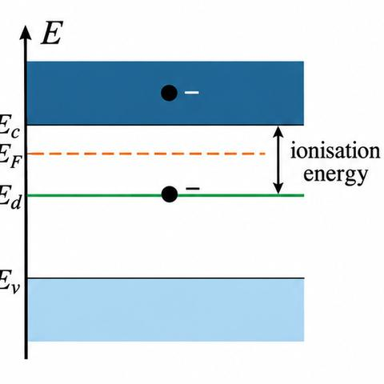
Let there be $N_d$ donors per unit volume at energy $E_d$. If $E_F$ is a few $kT$ below $E_c$, the electron concentration is (Eq. 7.20):
The electrons come from ionised donors $N_d^+$ and from thermal holes $p$, so charge balance gives
Where enough donors are present, the holes are suppressed by the law of mass action, so $p$ is dropped:
The minority carrier density then follows from $np=n_i^2$:
The ionised fraction is $N_d^+=N_d[1-f(E_d)]$. If $E_F$ is a few $kT$ above $E_d$, the exponential in the denominator is small, which gives
Put (7.20) and (7.40) into (7.38), take logarithms and solve for $E_F$:
This gives the Fermi level at moderate temperatures. It is halfway between the donor level and the conduction band edge, shifted by the second term. The formula fails at $T=0$ K, because $N_c\propto T^{3/2}$ tends to zero there. It also fails at very high $T$, where holes cannot be neglected. As $T$ rises the Fermi level falls and crosses the donor level, then reaches $E_g/2$, which is the intrinsic level. Fig. 7.8 shows this for $n$-type and $p$-type silicon at several impurity concentrations.
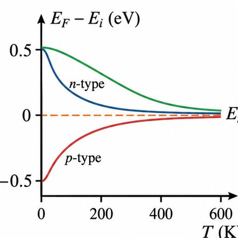
The carrier concentration in terms of the intrinsic level is (Eq. 7.42):
So $n$ reaches $n_i$ when $E_F$ reaches $E_i$, and rises exponentially as $E_F$ moves towards the conduction band. Substituting (7.41) into (7.20):
Here $\Delta E=E_c-E_d$ is the ionisation energy of the donors. At moderate temperatures $n$ varies as $\sqrt{N_d}$.
The conductivity is $\sigma=en\mu_n$. Since $n\cong N_d^+$ (7.38), this is
Figure 7.9 shows $\sigma$ against temperature for a moderately doped $n$-type Ge sample. Read it in three parts:
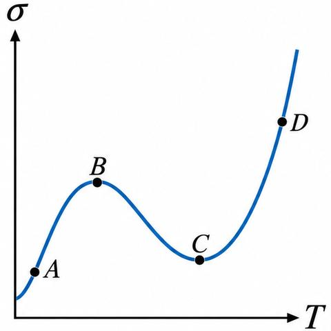
- From about 10 K (point A), $\sigma$ rises because donors ionise and add electrons. It peaks at point B, about 50 K, when all donors are ionised.
- From B to about room temperature (point C), $\sigma$ falls, because the mobility decreases with temperature. The intrinsic contribution grows, but more slowly.
- From C to D, $\sigma$ rises sharply, because the intrinsic conductivity grows fast enough to offset the fall in mobility.
2. The $p$-type semiconductor (§7.6b)
The acceptor levels $E_a$ lie above the valence band. For $T>0$ K some acceptors take electrons from the valence band and become ionised, creating holes. Charge balance gives $p=n+N_a^-$ (with $N_a^-$ the ionised acceptor density). Neglecting $n$ against $N_a^-$:
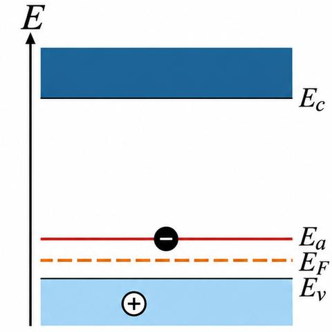
The ionised fraction is
If $E_a-E_F\gg kT$, this becomes
Equate (7.26) and (7.48) through (7.46) and solve for $E_F$:
So at moderate temperatures $E_F$ lies midway between the acceptor level and the top of the valence band. It rises with temperature and reaches the intrinsic level at high $T$, as in Fig. 7.8. Equation (7.49) is not valid at very high temperatures, where $n$ cannot be neglected. Using (7.26) and (7.28) gives the $p$-type form of (7.42):
The conductivity of a $p$-type sample is
Conduction by minority carriers is ignored. The temperature variation is like that of the $n$-type sample. Increasing either kind of impurity increases the conductivity. For $10^{20}$ to $10^{22}\ \mathrm{m}^{-3}$ of dopant, the resistivity of Si and Ge falls to about $10^{-3}$ to $10^{-1}$ ohm-m. Heavy doping ($10^{23}$ to $10^{24}\ \mathrm{m}^{-3}$) gives degenerate semiconductors, with conductivity close to that of metals, used in high power and high frequency devices.
3. The mixed semiconductor (§7.6c)
A sample with both donors and acceptors obeys charge neutrality:
If $N_d^+=N_a^-$, then (7.34) gives $p=n=n_i$: the sample behaves as an intrinsic semiconductor, because the ionised donors and acceptors cancel. If $N_d\neq N_a$, the sample is $n$-type or $p$-type according to which concentration is larger, and the results above apply.
4. Worked Example 7.1: conductivity and Fermi level of doped silicon
Given $\mu_n=0.135$ m$^2$/V-s, $\mu_p=0.048$ m$^2$/V-s and $n_i=1.5\times10^{16}\ \mathrm{m}^{-3}$ for intrinsic Si at 300 K, the intrinsic conductivity is
After doping with $10^{23}$ P atoms per m$^3$, $n\cong N_d^+=10^{23}\ \mathrm{m}^{-3}$. The hole concentration is
and the conductivity is
From (7.42), the Fermi level relative to the intrinsic level is
Fig. 7.11 shows the position.
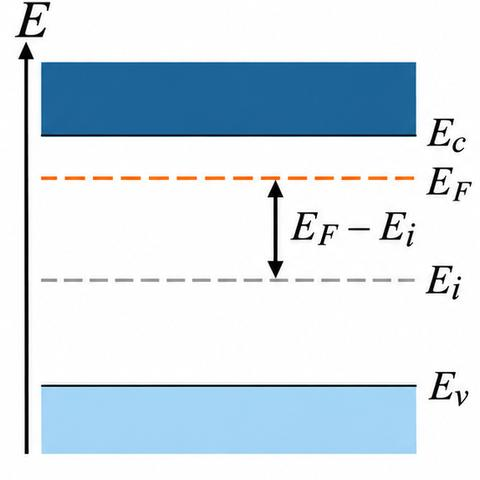
5. Worked Example 7.2: intrinsic GaAs
For GaAs, $\mu_n=0.85$ m$^2$/V-s, $\mu_p=0.04$ m$^2$/V-s, $m_n^*=0.068\,m_0$, $m_p^*=0.5\,m_0$ and $E_g=1.43$ eV at 300 K. From (7.36), the intrinsic carrier concentration is
The conductivity is then
6. Worked Example 7.3: band gap from two resistivities
For an intrinsic semiconductor $\sigma=CT^{3/2}\exp(-E_g/2kT)$, with $C=2e\mu(2\pi k/h^2)^{3/2}(m_n^*m_p^*)^{3/4}$. For two temperatures $T_1$ and $T_2$ with resistivities $\rho_1$ and $\rho_2$:
$\frac{\sigma_1}{\sigma_2}=\frac{\rho_2}{\rho_1}=\left(\frac{T_1}{T_2}\right)^{3/2}\exp\left\{\frac{E_g}{2k}\left(\frac{1}{T_2}-\frac{1}{T_1}\right)\right\}$, equivalently $\frac{E_g}{2k}\left(\frac{1}{T_1}-\frac{1}{T_2}\right)=\ln\frac{\sigma_2}{\sigma_1}+\frac32\ln\frac{T_1}{T_2}$.
With $T_1=293$ K, $\rho_1=4.5$ ohm-m, $T_2=305$ K and $\rho_2=2.0$ ohm-m:
$\frac{E_g}{2\times1.38\times10^{-23}}\left(\frac{1}{293}-\frac{1}{305}\right)=\ln\frac{4.5}{2.0}+\frac32\ln\frac{293}{305}$, so $E_g=1.54\times10^{-19}$ J $=0.96$ eV.